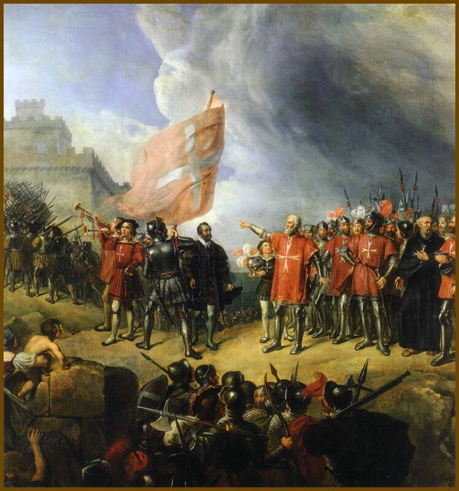

René Théodore Berthon, Филипп Вилье де л'Иль-Адам вступает во владение островом Мальта 26 октября 1530 года (1839, Музей дворцов Версаля и Трианона, Зал крестоносцев)
После потери Родоса последовала серия политических поражений ордена госпитальеров. Восемь лет скитались рыцари, обивая пороги сильных мира сего с целью найти пристанище. Иногда казалось, что все уже предопределено, и орден св. Иоанна Иерусалимского ждет такая же печальная судьба, как и судьба орденов тамплиеров и тевтонов и им суждено уйти в безвестность. Великий магистр Филипп Вилье де л'Иль-Адам использовал все свое дипломатическое искусство при дворах и резиденциях, но за внешне положительными результатами многочисленных переговоров все равно просматривалось отношение к ордену как анахронизму, пережитку Средневековья, которому нет места на политической арене Высокого Возрождения. Госпитальеры просили для своего ордена земли или на Сицилии в районе Сиракуз, или на островах Корсика, Сардиния, согласны были и на Минорку, Ибицу и Искью. И даже крошечные Эльба и Понца не были исключением из этого списка.
Однако европейские братья по вере не спешили селить орден вблизи от своих торговых центров и маршрутов. В памяти у всех еще свежи были воспоминания о славном корсарском прошлом родосских рыцарей, подвиги которых отнюдь не ограничивались захватами только лишь мусульманских судов. Купцы из Венеции, Рагузы, Флоренции и даже Генуи имели свои счеты с родосскими пиратами.
Оставался один вариант, который давно уже обсуждался с императором Карлом V – остров Мальта и крепость Триполи в нагрузку.
Время на раздумья оставалось все меньше. Экономическое положение ордена ухудшалось стремительными темпами. Его владения в странах, где побеждала Реформация, изымались местными властями. Оставалась надежда на католических правителей, которые пока еще признавали собственность ордена. Именно «первый католик» европейского мира Карл V еще в 1524 году предложил иоаннитам три маленьких острова Мальтийского архипелага в обмен на помощь в обороне Триполи. Предлагая Мальту, Карл ничем не рисковал. Остров находился на значительном удалении от европейских владений, располагаясь в то же время в непосредственной близости от Барбарийского побережья Северной Африки. Кроме того, Карл V обусловил передачу острова рядом ограничений, которые ставили госпитальеров под его жесткий контроль. В отличие от неограниченной свободы, которой пользовались госпитальеры на Родосе, на Мальте они должны были находиться в вассальной зависимости не только от короля Испании, но и от короля Сицилии, вассальное подданство которому они обязаны были бы подтверждать каждый год. Кроме того, Карл V имел право использовать флот иоаннитов во всех своих кампаниях в Северной Африке, а сухопутные силы рыцарей обязаны были сражаться в рядах испанской армии в ходе боевых действий против османов. Таким образом госпитальеры превращались в простых наемников, обязанных сражаться за чужие интересы под командованием испанских командиров. Даже несмотря на стесненные обстоятельства, в которых находились рыцари ордена, они конечно же не могли принять такие условия. Тем не менее, в 1524 г. на Мальту была направлена комиссия ордена, которая пришла к заключению, что имеются фундаментальные основания для отклонения этого варианта: продовольствие должно импортироваться, существующие фортификационные укрепления устарели и требуют реконструкции, небольшая численность местного населения не позволяет адекватным образом обеспечить потребности в живой силе для нужд обороны острова. (Bosio, Histoire des Chevaliers ).
Кроме того, рыцари не хотели брать на себя дополнительную обузу по обороне Триполи, хотя условие Карла о рассмотрении варианта Мальта+Триполи «в едином пакете» оставалось непреклонным.
В 1527 году Генеральный совет ордена уже собирался в Витербо, чтобы проголосовать за избрание Мальты в качестве своей будущей базы и резиденции. Однако из-за продолжающейся войны между Францией и Испанией профранцузское лобби не допустило тогда принятия решения. Дорогу к консенсусу открыл Камбрейский (Дамский) мир, подписанный 5 августа 1529 года между Франциском I и Карлом V. Члены Совета ордена уже в июле начали выдвижение на Сицилию, а еще ранее рыцари ордена заняли позиции на укреплениях Триполи. Оставалось утрясти небольшие детали, главной из которых было право Ордена на собственную монету. Карл, заинтересованный в скорейшем размещении сил иоаннитов на пути рвущихся на запад османов, постарался быстро решить этот вопрос, как и другие вопросы, обеспечивающие фактическую независимость ордена на Мальте. Дарственная бумага на Мальту, гласившая о передаче ее в вечную собственность ордена св. Иоанна Иерусалимского «вместе с городами, дворцами, островами», была подписана Карлом V 23 марта 1530 года. В июне 1530 года рыцари прибыли на Мальту, хотя незавершенность переговоров с испанским королем заставила отложить официальную церемонию принятия Мальты во владение орденом до ноября. В качестве ежегодной платы за остров орден обязан был поставлять Испанской короне через ее вассала – короля Сицилии – одного сокола. Карл со своей стороны обязался беспошлинно снабжать 12-тысячное население Мальты и двух других островов архипелага – Гозо и Комино – зерном с Сицилии. После прибытия на остров госпитальеры перенесли столицу в небольшой рыбацкий поселок Биргу (Il Borgo), так как прежняя столица Мдина, находясь внутри острова, не соответствовала военно-морской доктрине рыцарей. Сразу после этого они провели серию мероприятий по укреплению форта Сент-Анджело, самого города Биргу и двух других прилегающих к нему городов. Но об этом в следующий раз.